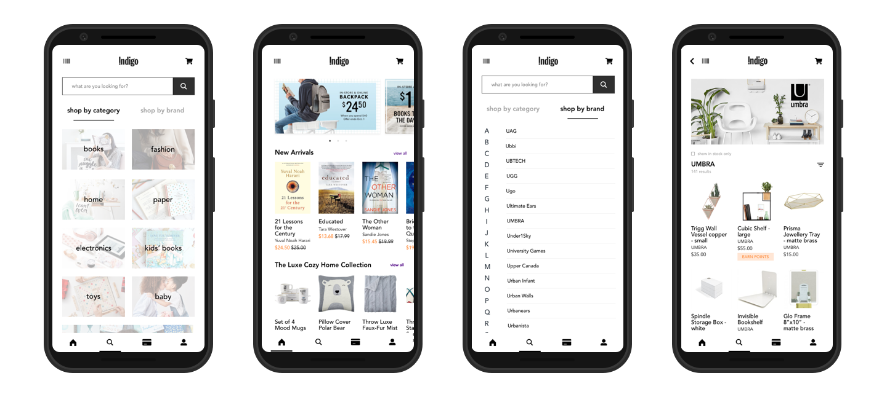
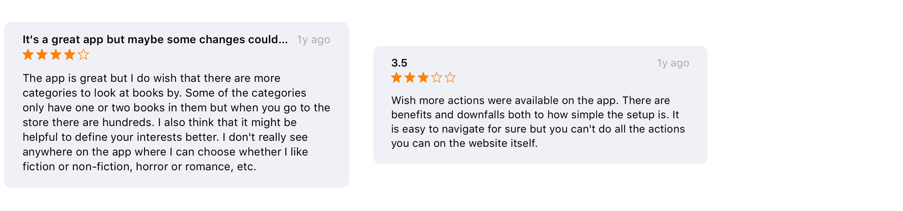
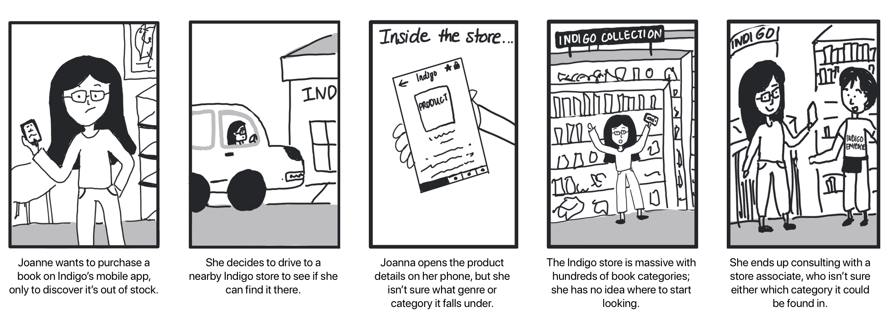
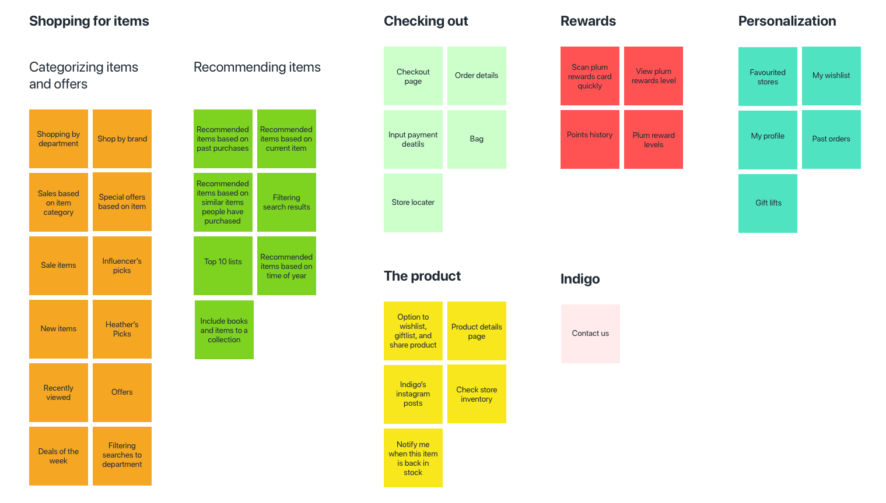
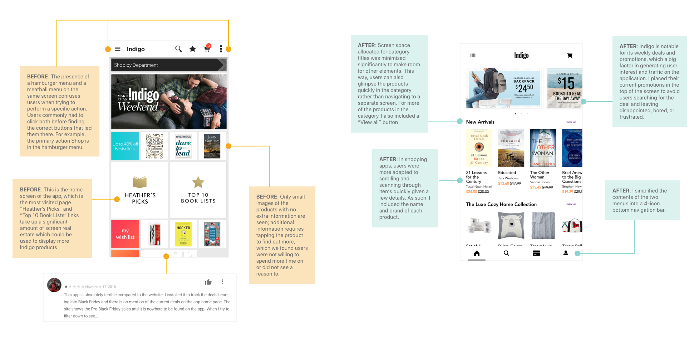
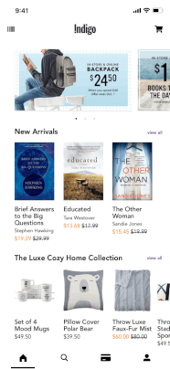
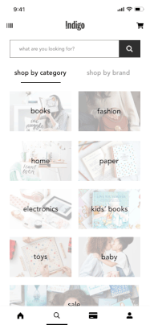

Background
Indigo Books & Music Inc. is Canada's leading bookstore with a history spanning over 60 years.
At Indigo, customers have access to a multitude of products spanning tons of sections such as home, baby, lifestyle, stationary, toys, electronics, fashion, and books. It houses the products of hundreds of other brands like American Girl, Umbra, Ted Baker, and Kate Spade New York. Their mobile app launched in 2013 and has since been a go-to location for their regular shoppers to purchase Indigo goods.
The Problem
Indigo
Pain Points
I identified bad UX practices and read through user ratings and reviews in the App Store and Google Play to improve on the current design. Here are some key issues I identified that were irritating users, and often leading to missed sales.
1. Lack of consistency across the web platform and the mobile application.

2. Users receiving promotions to their mailbox aren't able to find the same promotions in the app.
3. On most screens in the app, there is a hamburger menu and a ellipse menu on either side of screen, which confuses customers, since they aren't sure which of the menus has what action they want to perform.
4. Absence of visuals in the app.
5. No browsing opportunities; users leave the app much more quickly when they don't see anything of interest to them, such as new recommendations
6. Products don't have a category associated with them on the app, making it difficult for users to find the item in store
Storyboards
Use Case: Joanne

Affinity Diagram
A siginificant part of my redesign involved removing the use of two menu types: the hamburger menu and the ellipse menu in the top navigation bar and swapping it for a bottom navigation bar for a more modern, less confusing layout. I began by creating a list of the actions held within those two menus and placed the information in an affinity diagram. The challenge was being able to keep all the actions in the app for the user, but reconfiguring the work flow to access them through the introduced bottom navigation bar. For this, I had to establish a hierarchy of important actions to determine the number of steps to reach each action.

High-Fidelity Mockups Solutions
These are my proposed solutions to Indigo's app based off of pain points experienced by the user.
Home Screen
The home screen is the most frequented page of the app. It is a central location for users, acting as a guiding point for their next actions, whether they know them or not. Keeping this in mind, my redesign of the home screen incorporates pathways for users to access a variety of functions and give them some recommendations for users just looking to browse.
The ability to browse through items and catalogs like the gift lists and the Top 10's is a integral part of Indigo's business model and a great selling point to their consumer base, so my redesign enhances that feature to offer a more interactive experience. Additionally this solves the first pain point of users which is the lack of consistency between the mobile app and the web platform of Indigo.
Navigation - I've swapped out the existing hamburger menu and ellipse menu, which confused users on which to select as it is present on every screen in the app, and replaced it with a bottom navigation bar. With 4 recognizable icons, the user can have quick access to the app's main screens and functions: Home, Search, the Rewards Program, and Profile.
Sections - New sections in the home screen divide up the screen and incorporate lists of items, such as collections and top categories, similiar to the web platform.

Home screen sections

Search Results
In my proposed redesign, I moved the access the search screen to the bottom navigation bar which is a more accessible point for users as they hold their phones. A big pain point experienced was a missing indicator for out of stock items. The current experience has users tapping twice to check if items were available, which is not user-friendly or efficient.
Categorizing Search (New Feature)
As an ecommerce app, you want to eliminate as many friction points as possible to get the user to the checkout screen. A time consuming task affecting the process is the search filters. In several reviews, users complain about having to set 3 or 4 filters everytime they search to prevent unrelated results in different departments they had no interest in. In the web platform, they solve this by grouping the departments before the user types anything by Shop by Category and Shop by Brand. While not all filters can be removed, in the initial screen for searching I suggested adding the tabs Shop by Category and by Brand to expediate the user trying to find new items or locate a specific item.
Category Tabs

UI Design
Here of some of the other screens I worked on in this redesign.